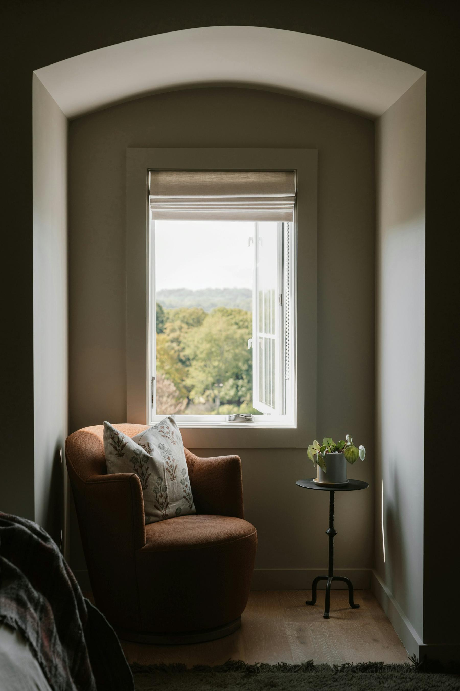
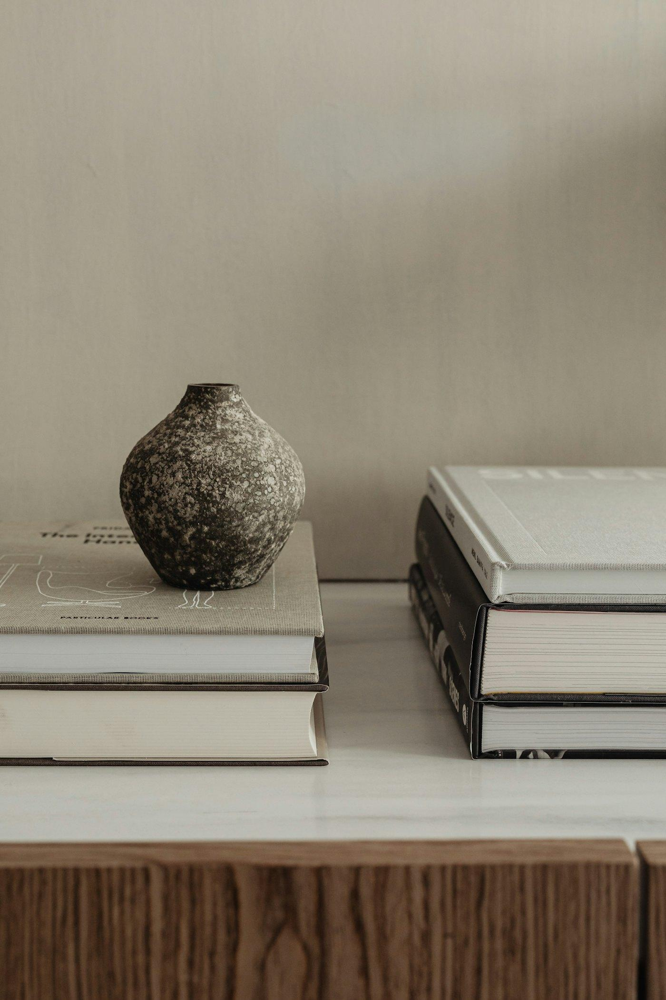

We make light you can feel.
Aurelle began with a simple belief: the right light changes how a room feels, and how you feel in it. So we make fewer things, by hand, from materials that only grow more beautiful with time.
From a single alabaster lamp
Our founder spent a decade sourcing lighting for interior design studios, and kept running into the same problem: the beautiful pieces took months to arrive from Europe, and the fast ones felt disposable.
So in 2021 we set out to build something in between. We partnered with a family of alabaster carvers in Volterra, a brass foundry outside Porto and plaster artisans in Los Angeles, and asked them to make lighting for American homes: properly wired, UL listed and ready to install.
Today every Aurelle piece is still made in small batches, inspected by hand, and shipped from our warehouse in New Jersey. It is a slower way to make things. We think you’ll see the difference.

Made slowly. Made to last.
Every piece we make has to pass three tests: it must be beautiful switched off, kind to the eyes switched on, and built to outlive trends.
Honest materials
Alabaster, travertine, solid brass, oak and linen. No plastics pretending to be stone, no plating pretending to be brass.
Human hands
Each piece passes through the hands of at least four artisans, and is signed and dated before it leaves the workshop.
Warm, healthy light
We design around warm 2700K light and dimmable sources, for rooms that feel calm in the evening.
What our light is made of
From quarry to your ceiling
Select
Our designers choose each block of stone and every metal alloy at source.
Shape
Artisans carve, turn, spin and finish by hand, often over several days.
Wire & certify
Every fixture is wired for US current and tested to UL standards.
Deliver
Packed in custom crates and delivered by white-glove partners to your room.

The Los Angeles showroom
See, touch and switch on every piece in the collection. Our showroom is open by appointment, with a stylist on hand to help you plan your rooms.